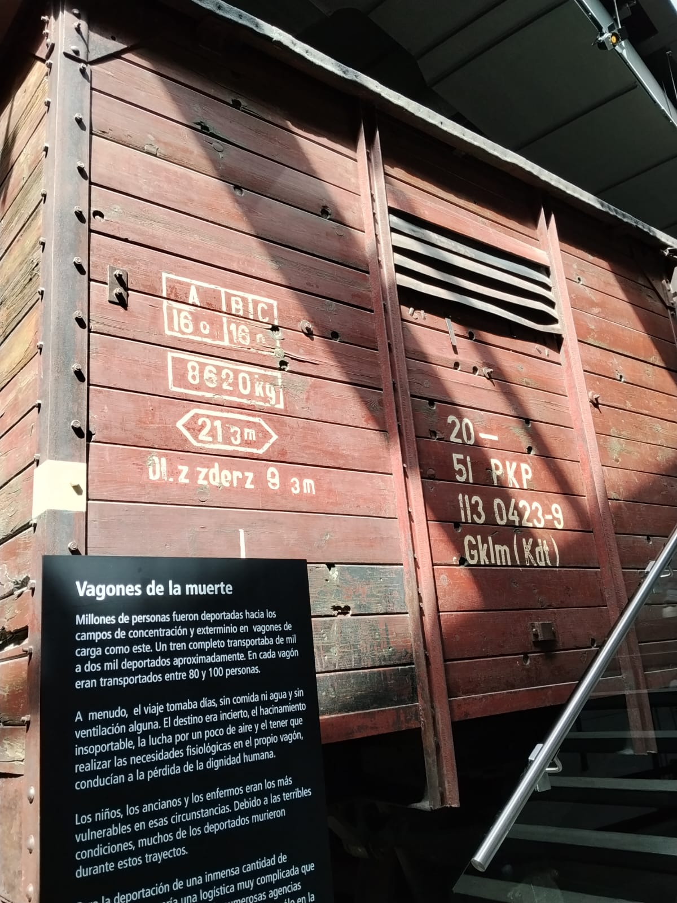
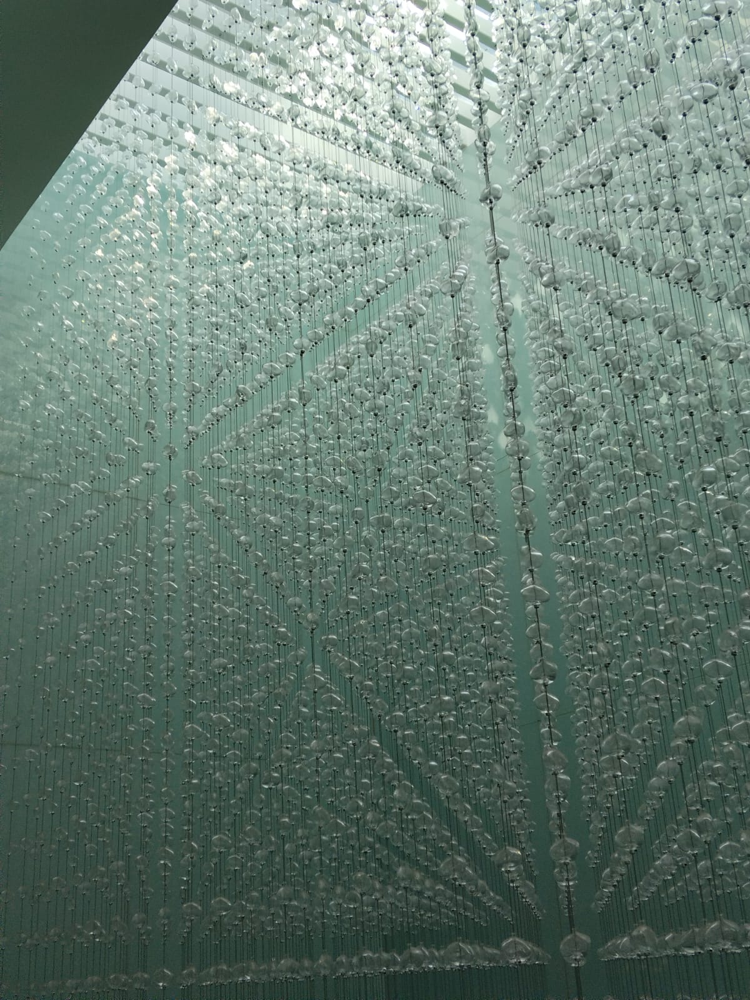
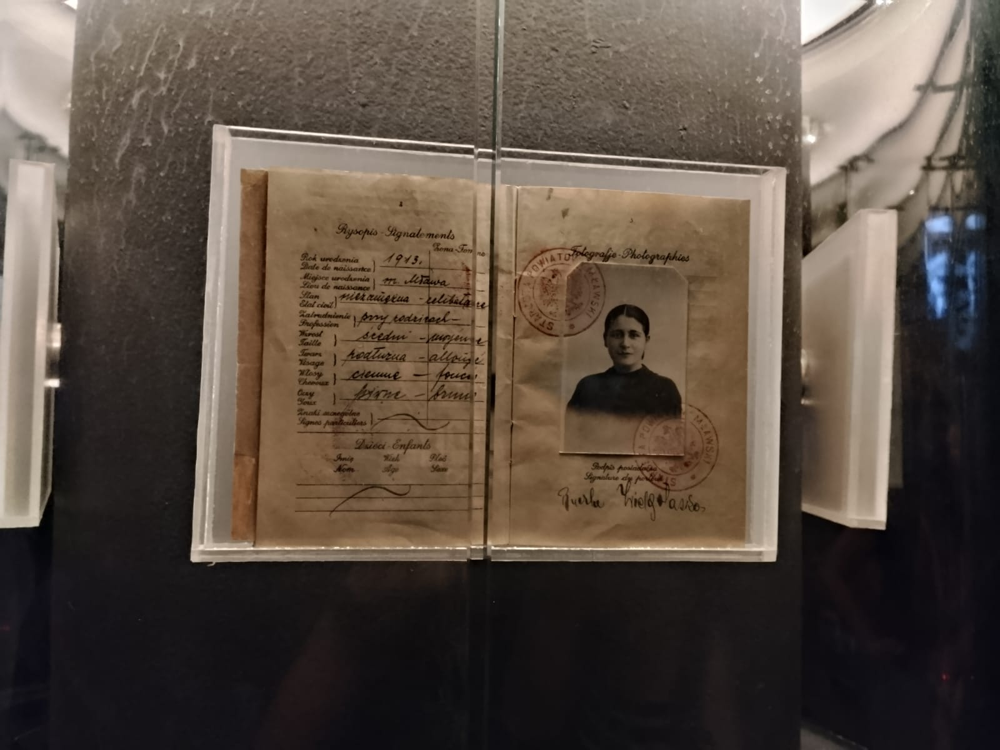
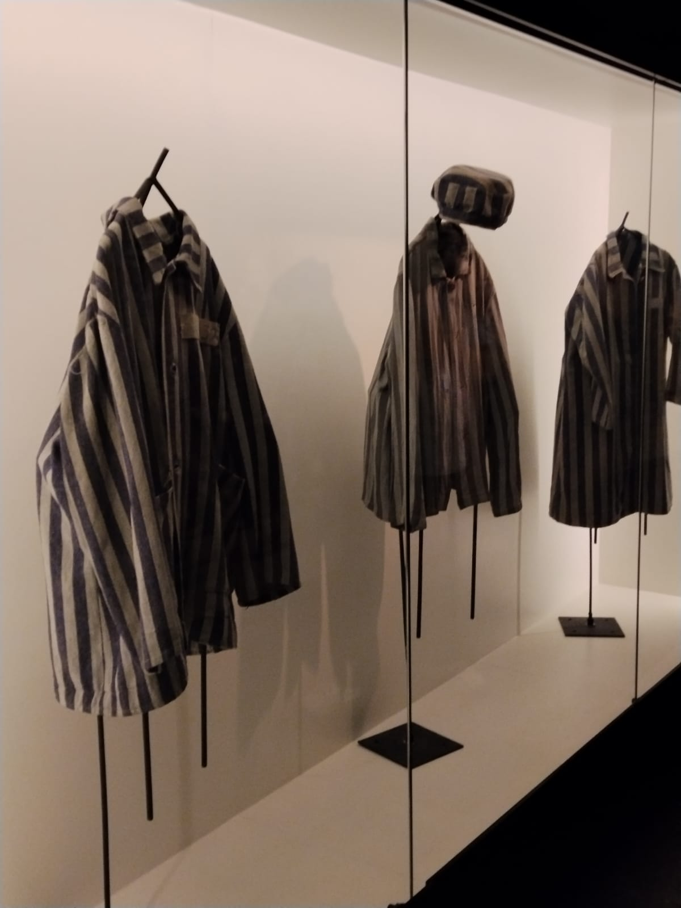
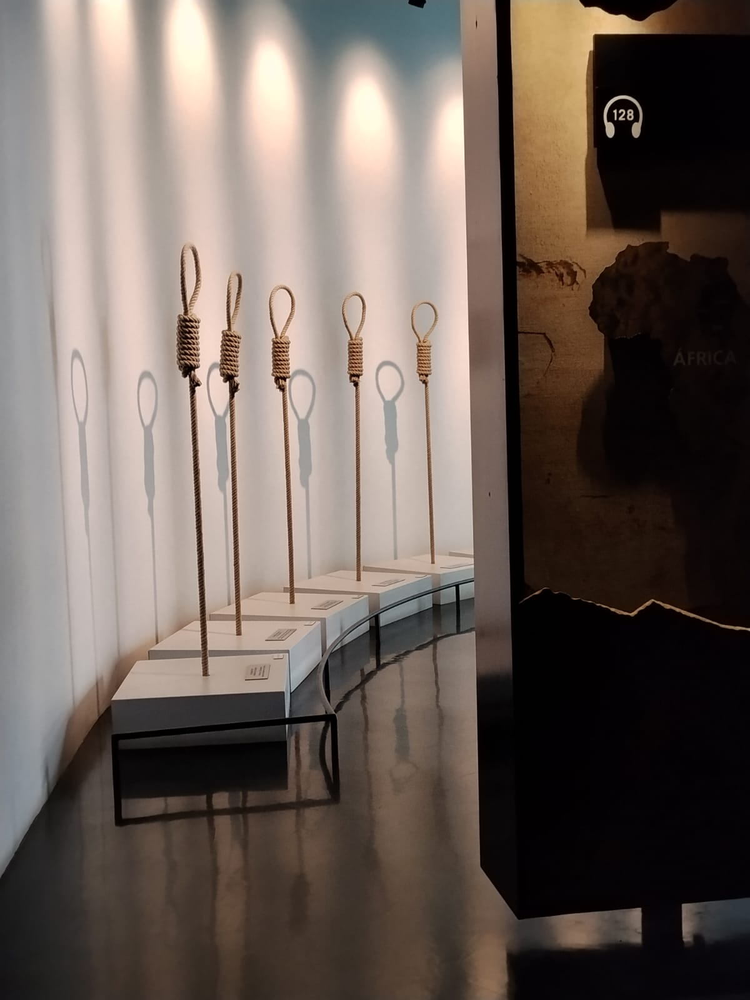
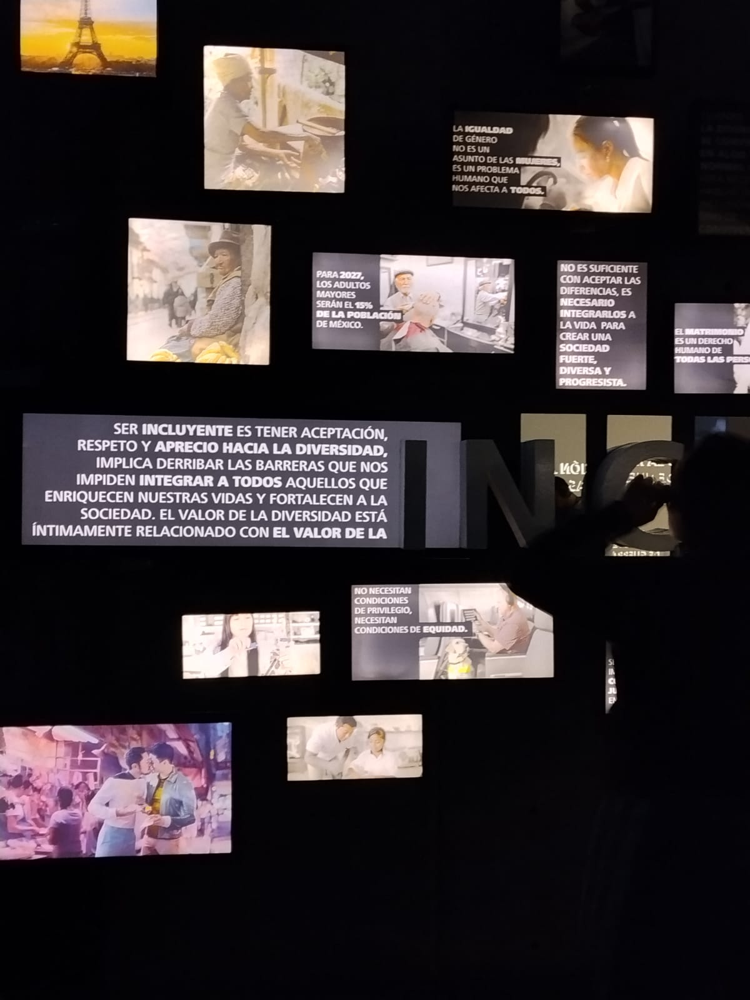

Colección permanente — desde 2010
La memoria no parpadeaUn espejo del presente
Fotorreportaje y ensayo ético a partir de una visita al Museo Memoria y Tolerancia de la Ciudad de México. Una pregunta guía todo el recorrido: ¿las formas de intolerancia y deshumanización que observamos en la historia continúan manifestándose hoy?

Sala Holocausto
InstalaciónEjes de la reflexión
Tres entradas al mismo problema
Investigación, bioética y comparación histórica se cruzan a lo largo de este reportaje. Cada tarjeta abre la sección completa más abajo.

Acerca del museo
Ficha técnica, notas de campo de la visita y el planteamiento de la pregunta central.

Cuando la ciencia deja de ver personas
Del Código de Núremberg al caso Tuskegee: los cuatro principios bioéticos frente a la deshumanización.

Los mismos mecanismos, otra forma
Las diez etapas del genocidio de Gregory Stanton, cruzadas con ejemplos históricos y actuales.
Investigación
Acerca del museo
El Museo Memoria y Tolerancia abrió el 18 de octubre de 2010, impulsado por la asociación civil Memoria y Tolerancia A.C. (fundada en 1999) bajo la dirección de Sharon Zaga Mograbi. Se organiza en tres secciones — Memoria, Tolerancia y exposiciones temporales — distribuidas en salas que abordan los genocidios del siglo XX y los mecanismos sociales de la discriminación.
El recorrido empieza por un vagón de ferrocarril usado para trasladar prisioneros a campos de concentración, traído desde Polonia. No es una réplica: es el objeto. Esa decisión museográfica — poner el cuerpo del visitante frente al objeto real antes de darle cualquier explicación — es en sí misma una postura ética. El museo construye un argumento con estructura clara: primero muestra qué pasó, después pregunta cómo fue posible, y termina en la sección de Tolerancia preguntando qué hacemos nosotros, hoy, con esa posibilidad.
[Espacio para tu reflexión] — Sustituye este bloque con tu propio análisis de la visita: qué sala te detuvo más tiempo, qué objeto o testimonio cambió tu manera de pensar la pregunta central, y por qué.
- Dirección
- Av. Juárez 8, Col. Centro, Cuauhtémoc, CDMX
- Apertura
- 18 de octubre de 2010
- Sección Memoria
- Holocausto · Armenia 1915 · Camboya 1975–79 · Guatemala 1981–83 · Ruanda 1994 · Ex Yugoslavia · Darfur 2003–hoy
- Sección Tolerancia
- Estereotipos, discriminación, derechos humanos, medios
Bioética
Cuando la ciencia deja de ver personas
La bioética moderna nace, en buena medida, de una sala como las que exhibe este museo. Durante los Juicios de Núremberg se documentaron experimentos médicos realizados por personal nazi sobre prisioneros sin su consentimiento. La respuesta fue el Código de Núremberg (1947), el primer documento internacional que estableció el consentimiento voluntario como condición indispensable para investigar en seres humanos.
El caso Tuskegee en Estados Unidos —donde a hombres afroamericanos con sífilis se les negó tratamiento durante décadas para "estudiar" la enfermedad sin consentimiento informado— muestra que la deshumanización dentro de la ciencia puede sobrevivir mucho después de un juicio histórico.
Pregunta para tu ensayo: ¿qué decisiones médicas o científicas actuales repiten, de forma más silenciosa, la misma lógica de "esta vida importa menos"?
Derecho a decidir sobre el propio cuerpo, con información veraz.
Actuar buscando el bienestar real de la persona.
Ante todo, no causar daño.
Distribuir riesgos y beneficios sin discriminar.
Beauchamp & Childress, Principles of Biomedical Ethics (1979).
Comparación histórica–actual
Los mismos mecanismos, otra forma
El politólogo Gregory Stanton describió el genocidio no como un evento súbito, sino como un proceso con etapas identificables. La tabla cruza esas etapas con ejemplos documentados por el museo y espacios para que anotes manifestaciones actuales.
| Mecanismo | Ejemplo histórico (museo) | Manifestación actual — tu investigación |
|---|---|---|
| Clasificación | División "nosotros / ellos" en la Alemania nazi | [completa] |
| Simbolización | Estrella amarilla obligatoria para personas judías | [completa] |
| Deshumanización | Propaganda que comparaba a grupos con plagas (Ruanda, Alemania nazi) | [completa] |
| Polarización | Leyes de segregación y discursos de odio en medios | [completa] |
| Persecución | Guetos, campos de concentración, desplazamientos forzados | [completa] |
| Negación | Negación oficial de genocidios (aún disputada en algunos casos) | [completa] |
Fuente del marco conceptual: Gregory Stanton, The Ten Stages of Genocide, Genocide Watch.
Explora las diez etapas
Antes / ahora
Arrastra el control: a la izquierda, la Sala Holocausto (memoria); a la derecha, el muro de mensajes de la Sala Tolerancia sobre inclusión y equidad hoy.

— pregunta central de este reportaje